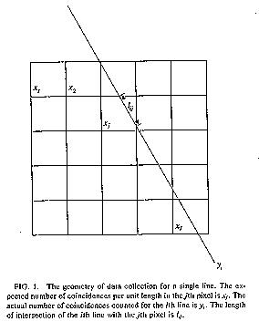
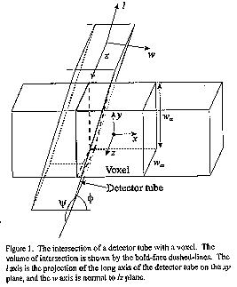
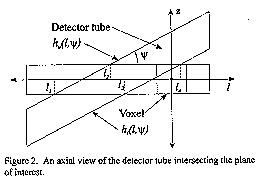
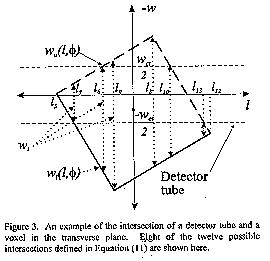
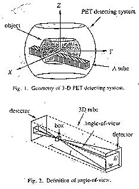

by Bill Deane
This paper discusses the results of a literature search on how various
researchers determine the weights in their PET data reduction.
The search was divided into three parts:
First, all of the papers in the existing collection of PET and SPECT research articles were reviewed.
Second, all post 1980 issues of "IEEE Transactions in Medical Imaging" and "Physics in Medicine and Biology" were searched for articles which were not in the existing collection. In addition, the 1991, 1992, 1993, 1994, 1995, and 1996 publications of the "IEEE Nuclear Science Symposium" were also searched.
Third, a publication trail was traced back in time for researchers at major research centers that had a history of publishing PET papers. Seven research areas were considered:
1. Berkeley (Llacer et al).
2. USC (Leahy et al).
3. Washington University/University of Michigan (Ollinger, Fessler
et all).
4. University of Pennsylvania (Herman et al).
5. University of Pittsburg (Townsend et al).
6. Bell Labs/ATT (Shepp et al).
7. North Carolina - North Carolina State University, Duke, University
of North Carolina (Trussell, Wilson, Tsui et al).
A by product of this search was the addition of approximately sixty new research papers to the PET paper collection.
It was assumed beforehand that very few papers would actually mention, much less discuss in detail, this aspect of data reduction. It was also assumed that the earlier papers would prove to be more helpful. For the first assumption, this proved to be true. However, for the second, it was found that discussions of weights occurred in papers ranging from 1982 to 1998.
Three major methods of weight calculations were explained in the literature.
1. Linear.
2. Area and volume.
3. Solid angles.
LINEAR:
The name of Gabor T. Herman at the Medical Image Processing Group, Department of Radiology of the University of Pennsylvania is synonymous with the use of linear weights. And indeed many, if not most, of his papers contain, "Fig. 1. The geometry of data collection for a single line" which is reproduced below:
 However, it was two of his co-workers in 1986, Robert M. Lewitt and Gerd Muehllehner, and not Herman, who actually published and explained the use of linear weights specifically for PET data reduction. This paper, based upon the EM algorithm, states:
"The major difference between our implementation and that of [13] occurs in the calculation of the a(i,j) (i.e., p(b,d) in the notation of [13]). We use linear interpolation along rows or columns of the image to derive the weights a(i,j) for the coincidence line joining the ith pair of detector elements similar to the method decscribed in [29] in the context of X-ray transmission CT. As discussed in [13], this kind of simple geometrical method for calculating the weights leads to an efficient computer implementation and is therefore convenient for testing the algorithm. The effect of photon attenuation is taken into account in our present work by applying the usual multiplicative correction to the measured data, whereas consistent adherence to the statistical model would require that photon attenuation be included in the calculation of the weights a(i,j) [12],[30]. In future work we plan to make use of weights that represent more accurately the physics of the emission and detection processes, in order to exploit the full potential of the iterative approach to image reconstruction [12],[30]."
[12] is Lange and Carson's paper of 1984 and [30] is a three page article by K. J. Kearfott (Dept. of Electrical and Computer Engineering, Arizona State University) which I have yet to obtain.
[13] is a rarely referenced paper of Shepp et al, published in 1984, which deals with the actual testing of real data with the maximum likelihood algorithm. In this paper, the authors state, "We expect that more accurate values of p(b,d) computed, or measured, once and stored would make the ML reconstruction even better."
[29] is a paper published in 1982 by Peter M. Joseph, who later joined Herman at Pennsylvania. It is entitled, "An Improved Algorithm for Reproducing Rays Through Pixel Images." In the abstract, he states, "It is often desired to calculate line integrals through a field of reconstructed CT density pixels for the purpose of improving CT image quality." And also, "An algorithm is described, based on linear interprolation between pixels, which provides superior accuracy without unnecessary loss of resolution."
The paper first reviews the square pixel method:
"The basic assumption here is that the object considered truly consists of an array of NxN square pixels, with the image function F(x,y) assumed to be constant over the domain of each pixel. The method proceeds (ideally) by evaluating the length [L] of intersection of each ray with each pixel, and multiplying by the value of the pixel:
S(K) = SUM(n,n') L(n,n')P(n,n')
where the indices n, n' specify the row and column of the pixel, whose value is P(n,n')."
"The major criticism of this method is the unrealistic discontinuity of the model. This is especially apparent for rays whose direction is exactly horizontal or vertical, so that relatively large jumps occur in S values as rays cross pixel boundarys."
Next, are comments concerning the forward projection method based upon the equation:
t = xncos(theta) + yn'sin(theta)
"The major criticism of this algorithm is that the spatial resolution of the reprojection is lessened by the finite spacing between rays. Clearly, the interprolation [of the author's eqn. 6] spreads out the contribution of each pixel by a distance of up to 1 ray spacing relative to its true geometric position. Furthermore, ... increasing the number of pixels by a factor F does not contribute to a reduction in this spreading, but does increase processing time by a factor of F2."
Finally, the author presents his new algorithm:
"The new algoritm is structured in a way similar to the square pixel method in that a given ray K is specified exactly as a straight line
y(x) = -cot(theta)*x + yo
or
x(Y) = -y*tan(theta) + xo
The basic assumption is that the image is a smooth function of x and y sampled on the grid..."
The equations are expanded into integrals and then:
"In each case, the one-dimensional integral of [author's eqn. 8] is to be approximated by a simple (Riemann) sum: for example, the x-direction integral becomes
S = (1 / |sin(theta)|) * {SUMn=2 to N-1 P(n,n') + LAMDAn * (P(n,n'+1) - P(n,n')) + T1 + TN}
where terms T1 and TN represent the first and last pixel on the line and are treated separately, and LAMDAn is the fractional number [which the author defines]..."
The paper then discusses testing and results, and emphasizes, "...the major difference between our technique and the square pixel method is due to the smooth versus discontinuous modeling of the image."
In 1987, H.J. Trussell et al, at North Carolina State University, published a paper entitled, "Errors in Reprojection Methods in Computerized Tomography." In the introduction, the authors briefly discuss algebraic reconstruction techniques (ART) and note:
"The coefficients are most often generated by the square-pixel method, that is, by assuming the original image is made of uniform square areas and the projections are computed by summing the product of the pixel value and the distance each ray passes through each pixel. In the limit, as pixels become vanishingly small, this method can become arbitrarily close to a real continuous system."
Six reprojections methods were presented:
"1. Square pixel method.
2. Two-point linear interpolation.
3. Three point linear interpolation.
4. Four point linear interpolation.
5. Reproduction using local basis functions.
6. Reprojection using fourier interpolation."
Each of the methods is discussed. With regard to the square pixel method, the following observation is of extreme interest:
"Integration is performed by multiplying the pixel values with a weighting factor along a given line, where this factor is equal to the length of the ray in a particular pixel. The method leads to a simple, but large, system of linear equations which can be solved by a variety of methods. Unfortunately, while the method works well on mathematical phantoms which satisfy the simple model, it does not give good results when the data are obtained from actual hardware."
The two/three/four-point linear interpolation methods involve using the nearest 2, 3, or 4 neighbors to get a better sample value. "The line integral is calculated from these sample values using any one of several numerical integration techniques."
In the summery, the authors admit that the experimental results of testing all six methods show, "... the error was relatively insensitive to the exact reprojection method."
AREA AND VOLUME:
"We used the method of Shepp and Vardi," or a similar generic sentance, is the most commonly expressed reference to weights in the PET literature. There were three seminal papers published by L. A. Shepp and Y. Vardi in 1982, 1984, and 1985. Weights were discussed in great detail in the 1982 paper, were worth a paragraph in the 1984 paper, and were only obliquely refered to in the 1985 paper.
Section III of the 1982 paper, which is fairly long, is devoted to the choice of weights, which are designated p(b,d). Rather than computing the weights once and storing them, They decided to calculate them on an as needed basis:
"Storing the nonzero p(b,d) values is more convenient but the programming demands more effort. We decided to compute p(b,d) anew, on the fly, each time it is needed, as is clear in the program supplied in Appendix II. For this purpose we used p(b,d)'s which were easy to calculate, for most of our runs. We chose
p(b,d) = (2nR)-1 X (width of the intersection of the circle of radius R about the center of b and the strip defined by the tube d)
where R is a parameter which we usually take to be the radius of the inscribed circle to b, and n is the number of dectors elements around the detector circle. Note
SUMd=1 to D p(b,d) = 1
and p(b,d) is exact..."
They support their selection with, "...this choice of p(b,d) produces remarkably accurate reconstructions when compared to the actual box-counts n(b), and are not much different than if p(b,d) are calculated by the more accurate method using the angle-of-view from the center of b into d."
In the 1984 paper, they reiterate, "...defining p(b,d) proportional to the width of intersection of the inscribed circle in b and the tube d."
A clear demonstration of the importance of the 1985 paper can be judged by the large number of comments by other researchers that were published in conjuction with Vardi, Shepp, and Kaufman's article. K. J. Kearfott's comment specifically addressed the weights:
"The simple, centrally-weighted model for the p(b,d)'s used by Vardi et al is adequate for the initial evaluation of the usefulness of MLR for a given PET system. However, refinements to these geometric p(b,d)'s, which could improve MLR include:
(a) integration over the boxes;
(b) accounting for the angles subtended by the tubes on the boxes;
(c) corrections for changes in effective detector efficiency, resulting
from the inclination of detectors with respect to the incident photons;
(d) accounting for the nonsquareness of the detector faces;
(e) variations of p(b,d) with axial position within a plane.
The refined p(b,d)'s may be computed once and stored, especially if full use is made of symmetry to reduce the problem of size. The sensitivity of the algorithm to the values chosen for the p(b,d)'s could be investigated by comparing the results obtained with different approximations of the p(b,d)'s."
As mentioned above, many, perhaps most, researchers simply used the weights method of Shepp and Vardi and never looked back. A typical example is Llacer et al at the Engineering Division, Lawrence Berkeley Labratory. In a 1986 paper, Llacer devotes a paragraph to the discussion of weight. It is correctly pointed out, "The probability elements a(i,j) can be calculated in a number of ways." And they also state, "Although Shepp and Vardi mention that the results of their simulations are rather insensitive to the choice between two models that they have investigated, we feel that the calculation of probability matrix elements taking into consideration physical detector characteristics should become important with the advent of high resolution PET systems." Never-the-less, inspite of this declaration, their discussion of weights concludes with, "At this time, however, we can only report results using the Shepp-Vardi model for probability calculations."
This raises the possibility that in future work, one might expect to see different weight methods being examined. In 1989, Llacer writes, "All reconstructions were carried out with the Shepp-Vardi prescription for the transition matrix [4=Shepp & Vardi 1982], with an image plane of 128 x 128 pixels of 2.03 mm sides." And in 1993, Llacer writes, "The matrix values that we have used for the reconstruction with simulated data have been obtained by the simple procedure of finding the area of the intersection of a circle of area equal to a pixel area, centered on that pixel, and the parallel-line tube that joins the faces of two detectors."
However, Shepp and Vardi used an "inscribed" circle, which means the circle is contained completely inside the square pixel. A square pixel with sides of length 1, has an area of 1. A circle of area 1, has a radius of 0.56. Since the radius is greater than 0.5, a small part of the circle must lay outside of the square pixel. This means that the calculated weight for a pixel also includes a minor contributions from neighboring pixels (if the square pixels adjoin on all four sides).
So, this represent a trivial variation of the method of Shepp and Vardi.
True area and true volume are, perhaps, the least discussed method used for weights. I only found three papers that offered any discussion on true area or true volume and all there were recent in date.
The first is by John M. Ollinger et al. Published in 1996, this paper deals with "fully 3D PET" and contains three excellant diagrams that display the geometry of how the true volume is calculated:
There is an extensive explanation of how they derive their weights:
"Implementation of thse algorithms hinges on the accurate calculation of {ank}, the coefficients of the transition matrix. The following assumptions are made.
1. A given detector pair is sensitive to photons emitted along a tube
with a rectangular cross-section.
2. A detector is uniformly sensitive across its face.
3. Voxels have sides of equal length in the transverse plane.
Given the above assumptions, the problem of calculating the coefficients of the transtion matrix becomes one of calculating the volume of the intersection of a tube with a voxel as shown in figure 1. The image coordinate system xyz is centered in the voxel of interest. We assume that the long axis of the detector tube is rotated from this coordinate system by oblique angle chi and azimuth angle phi. The coordinate system lwz is defined as the rotation of the xyz coordinate system by angle phi about the z axis such that the l axis is the projection of the long axis of the detector tube on the xy plane.

The idea is to divide the volume to be integrated into sub volumes over which the integration is easy. Since the axial dimension of a detector tube is parallel to the axial face of a voxel, these regions can be parameterized by the l coordinate. We begin by defining each boundary. They can be seen more clearly by examining two ortogonal views.
Figure 2 shows a view in the lz plane of the intersection of the detector tube with the image plane of the voxel of interest."

A short series of equations are presented that supplement figure 2 and then figure 3 is discussed:
"A view of the lw (transverse) plane is shown in figure 3. There are a total of eight possible boundaries shown here, one for each corner and two for each side. Four additional possibilities are not shown."

There is considerable additional explanation with detailed equations and one short example. The authors then point to the problem concerning the size of the matrix, "... the transistion matrix would require 26 GB of memory. Clearly symmetry relations must be used."
Symmetrical relationships are examined and it is shown, "Use of these relationships reduces memory requirements by a factor of 124..."
The second paper is an out growth of a Master's thesis by Dean Huff who was a graduate student in computer science at the University of Tennessee:
"We compute pbd as the exact area intersection of tube d with pixel b relative to the sum-total intersection of all tubes with that pixel; thus, by design, SUMd pbd = 1."
"Due to the circular arrangement of the detectors, the width of a tube depends on its location; a tube located near the periphery (cf. Fig. 1). To take this nonlinear nature of the sampling into consideration, we model each tube by the trapezoid obtained by connecting the corners of the two detectors in question."
The third paper was Technical Report No. 293 by Jeffrey A. Fessler of the Department of Electrical Engineering and Computer Science at the University of Michigan. The report is an eighteen page long users guide to the ASPIRE 3.0 software created by Fessler. It is available over the internet at:
http://www.eecs.umich.edu/~fessler/aspire/index.html
There is a discussion of the weights on pages 13 and 14. Unfortunately, there is no philosophical explaination of why Fessler prefers this method, but rather, just a statement that he does:
"The measurements from many tomographic instruments can be approximated by line-integrals or strip-integrals. In this case, elements gij of G is proportional to the area of interesction between the jth pixel and the ith strip (Fig.1). I very strongly recommend strip-integrals over line-integrals." However, Fessler mentions that in using his program, "If you set SCALE to 0, then you will get strip-integrals that have the same units as line-integrals, which is useful for transmission tomography."
He also provides, "Weights are generated only for pixels lying wholly within an ellipse centered (in this example) at (0,0)(dead center of the pixel matrix) having horizontal, vertical radii 62, 57 pixels (in this example). This saves lots of memory, but make sure the ellipse is big enough!"
On page 18, there is an excellant drawing that demonstrates his parallel strip-integral geometry.

SOLID ANGLE:
The solid angle is primarily used for 3-dimensional PET data reduction, however, it has also been described for 2-dimensional use.
In 1991, C. M. Chen et al published two figures in a paper on 3-D PET image reconstruction, which are reproduced below:

The two figures demonstrated the geometry of the solid angle with reference to the two detectors and the position of the "box", which is the name given to the 3-D pixel (also called a voxel). Unfortunately, there is only a short discussion of the use of solid angle weights, designated p(b,t), by the authors:
"The p(b,t) can be represented by the angle-of-view of box b associated with tube t, defined as
hw/l2
as shown in fig. 2. Rather than computing p(b,t) on the fly, which would require enormous computation, the p(b,t) is precomputed for a given system geometry."
Note that in the drawing, h and w are less than the size of the detector and that the angle of view is created by a rectanglular conic rather than the traditional cone associated with solid angle.
Numerous papers published by researchers at USC, and more recently at UCLA, have discussed what they call, "Pgeom" or "Pgeometric". This notation was apparently created by E. U. Mumcuoglu in conjunction with his dissertation work at USC and was first published in 1994. In that paper, Mumcuoglu defines the term Pgeometric as "... contains terms for both the geometrical relationship between the source volume and the detectors and for the effect of the uncertainties in the angular separation of the photon pair produced by annihilation."
Two years later, in 1996, Mumguoglu provided expanded information about what he now calls Pgeom:
"The factor Pgeom is an N x M2 matrix with elements (i,j) equal to the probability that a photon pair produced in pixel j reaches the front faces of the detector pair i in the absence of an attenuating medium and assuming perfect photon-pair colinearity. This coincidense response is well modeled as a trapezoidal function with depth dependence parameters[4]. This response changes slowly from triangular in the center to square at the detector surfaces, due to depth dependent changes in the solid angle subtended by the pixel at two detectors. For pixel sizes smaller than the detector width, each pixel will contribute to at most two sinograms elements per angle of view and consequently this matrix is very sparse with approximately P x N2 nonzero values, where P is the number of angles of view."
Finally, in 1997, in a paper authored by six researchers at USC and UCLA, Pgeom is discussed again in terms of solid angles, "It is calculated based on the solid angle spanned by the voxel j to the detector pair i."
There is also an excellant discussion of symmetries:
"Although the full size of Pgeom is extremely large, Pgeom is very sparse and has redundancies of which we can take advantage to reduce the storage size. By choosing the voxel size in the z direction to be an integer fraction of the ring distance, there are the following symmetries in the Pgeom matrix. In-plane rotation symmetries, resulting from rotating the projection rays by theta = 90o, 180o, 270o, and a theta = 45o reflection symmetry provides a total factor of 8 reduction (with the exception of angle theta = 0o and the ray passing through the image center where there is no refection symmetry). Axial reflection symmetry provides an additional factor of 2 reduction for ring difference other than zero. The symmetry of sinograms with a common ring difference Rd provides a reduction by a factor of (Nr - Rd) where (Nr is the number of rings in the system, Combining these, the total reduction factor from the symmetry operations is approximately 64..."
Peter J. Green of the University of Bristol, England published a paper in 1990 that promoted the use of solid angles in 2-dimensions. He devotes almost two pages to the discussion of weights:
"The weights used in the examples in this paper are based on a simple model for the physical circumstances in which the data are recorded."
He lists three factors that effect his data reduction:
"i) the proportion of radioactivity that has not decayed by the time
at which photons are collected in detector t.
ii) the solid angle of view of the center of pixel s into detector t,
which is treated as a cylindrical tube of known length and radius, and
iii) the proportion of emissions that survive attenuation."
Note the reference to a "cylindrical tube" as compared to Chen's "rectangular tube."
Green continuess;
"These considerations apply for three-dimensional reconstruction from a sequence of two-dimension projections. Our numerical examples will address the usual smaller problem obtained by iqnoring the third dimension: the spatial component parallel to the axis of rotation. We thus reconstruct each section or slice of the patient, perpendicular to this axis, from one-dimensional projections corresponding to that slice. It is then necessary to account for the third dimension: for example, emissions outside a slice may be registered within that slice. The approximation made here is that succesive slices are sufficiently similar that they can be assumed equal: xs therefore denotes the concentration throughout a narrow prism parallel to the axis of rotation. The solid angle in ii) is then replaced by its integral over the third dimension."
In his treatment of weights, Green concludes:
"...there seems to be either no details given about the construction of the weights, or a side stepping of the whole matter by using only artificial projection data generated either precisely from the model, or by simulating from the continuous Poisson model that underlies it."